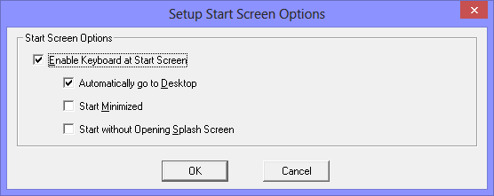

| My-T-Soft®: for Windows; Indestructible Keyboards and Indispensable Utilities; Version 1.80; User's Guide | ||
|---|---|---|
| Prev | Next | |
Open My-T-Soft Logon Utilities from Start Menu | (All) Programs | My-T-Soft
Select Setup Start Screen Options

When running the Keyboard at the Start Screen is enabled, there are 3 options available
Automatically go to Desktop
Start Minimized
Start without Opening Splash Screen
The additional actions/options are disabled unless the Enable Keyboard at Start Screen is checked On.
Check Enable Keyboard at Start Screen On to enable the automatic startup of My-T-Soft after the user logon and during the display of the Start Screen. With no other options selected, My-T-Soft will appear as it is currently configured.
Each option is independently selectable and can be selected in any combination.
Automatically go to Desktop inserts a Win-D keystroke combination into the system, and will take the logged on user directly to the Windows Desktop screen.
Start Minimized - when selected, this will start My-T-Soft and then display in the currently configured minimized state. Note some minimize options may not be available / visible at the Start Screen (e.g. if you do not select Automatically go to Desktop). It is recommended that the Button or Window option be used if this option is selected.
Start without Opening Splash Screen bypasses the splash screen opening when being launched via this feature.
Technical Notes: The older Windows StartUp Group option will not launch an application until the user goes to the Desktop. These Start Screen options provide additional features and capabilities by integrating with newer Windows capabilities via the Ease of Access tools. The actual file MYTSOFT_RUN.EXE is used to launch My-T-Soft in different ways based on options set via the My-T-Soft Logon Utilities | Setup Start Screen options. The program uses mutexes and command line options to launch My-T-Soft. This is configured at HKEY_LOCAL_MACHINE\SOFTWARE\Microsoft\Windows NT\CurrentVersion\Accessibility\ATs\img_my-t-soft_v180 and configured to run in the HKEY_CURRENT_USER\SOFTWARE\Microsoft\Windows NT\CurrentVersion\Accessibility via the Configuration Key. If used, this should be disabled prior to un-installing the software - no accommodation to remove this registry entry is performed, so if this option is in use and the software is uninstalled, this entry will remain. However, with the software removed, its existence will have no affect on the system, although it will appear in Ease of Access under keyboard options.